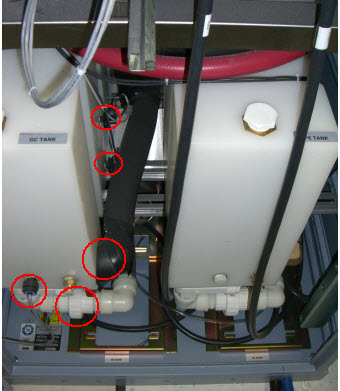
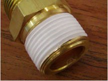
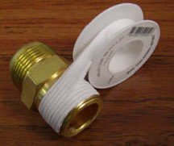

Operating Documentation
Direction 5670006, Rev# 1
Discovery MR750w GEM Service Methods
Module Version 1.0, Version Date 11/4/10
Operating Documentation |
| Required Persons | Preliminary Reqs | Procedure | Finalization |
|---|---|---|---|
| 1 | 1.5 hours | 4 hours | 1.5 hours |
| Item | Qty | Effectivity | Part# | Manufacturer | |
|---|---|---|---|---|---|
| Coolant Removal Kit (located in Heat Exchanger) | 1 | - | 5269683 | - | |
| Adjustable Wrench | 2 | - | - | - | |
| Buckets | 2 | - | - | - | |
| Channel Locks | 1 | - | - | - | |
| Nitrile Gloves (included in FRU kit) | 1 | - | - | - | |
| Item | Qty | Effectivity | Part# | Manufacturer |
|---|---|---|---|---|
| Teflon tape | As needed. | - | - | - |
| Item | Qty | Effectivity | Part# | Manufacturer | |
|---|---|---|---|---|---|
| HEC Facility Tee with QD | 1 | - | - | - | |
| ||||
| pressurized liquid | ||||
| there is pressurized liquid inside the HEC cabinet when energized. refer to Loto for heat exchanger cabinet. | ||||
| wear nitrile gloves when handling coolant. |
The HEC Facility Tee with QD (quick disconnect) is located in the rear of the lower portion of the heat exchange cabinet. This assembly provides facility coolant to the heat exchangers for both the power electronics (PE) and gradient coil (GC) loops. See illustration below.
Illustration 1: HEC Facility Tee with QD

Perform LOTO for the Heat Exchanger Cabinet.
Drain the facility water from the cabinet per the Coolant Draining procedure.
Drain the appropriate coolant reservoir per the Coolant Draining procedure.
If replacing the PE side facility tee with QD, drain the PE tank only.
If replacing the GC side facility tee with QD, drain both tanks.
Drain the respective pump via the small clear pump drain hose by placing it into a bucket and loosening the pump air relief bolt.
Illustration 2: Pump Drain Hose Location

| NOTE: | Before you disconnect the hoses in Step 1, either take notes or label the hoses and cables accordingly so that you can properly reattach the hoses. |
Disconnect all hoses and sensor cables from the appropriate coolant reservoir (see Illustration below).
Illustration 3: Hoses and Sensor Cables

Remove the pump shield(s) from the underside of the coolant reservoir (just above the pumps) and maneuver out the front of the cabinet in order to access screws for reservoir removal.
Remove appropriate coolant reservoir(s) from the cabinet by removing the screws from the underside.
Disconnect the facility hose from the top of the facility tee (see illustration below).
Illustration 4: Removing Facility Hose from Facility Tee

Unthread the assembly from the pipe nipple in the heat exchanger (see Illustration below).
Illustration 5: Cryo Supply Header Removal

| NOTE: | An additional pipe nipple is shipped with the FRU. It can be used as needed to replace the pipe nipple in the HEC. |
Apply Teflon tape to the pipe nipple still attached to the heat exchanger before installing the replacement facility tee assembly.
For applying new Teflon tape, start one thread in from the end of the male thread as shown in the illustration below. Doing so will prevent tape from entering the fluid passage.
Illustration 6: Application of Teflon Tape

Because Teflon tape is not adhesive-backed, hold the end of the tape with a finger until one full wrap is completed. Wind the tape in a clockwise direction (as viewed from the end of the fitting). This will ensure that the installation of the mating components will result in wrapping the tape in the same direction and not unraveling or unwinding it.
Illustration 7: Correct Application of Teflon Tape

After the first wrap, continue wrapping in a clockwise direction with moderate tension applied to the tape roll. Overlap the prior layer by a half width of the tape as shown in the illustration below. This will ensure two layers of tape cover all threads of the fitting.
Illustration 8: Teflon Tape - Overlap

Threading the new assembly onto the pipe nipple assembly will take approximately 3½ to 4 turns. Take this into consideration when attaching as an initial offset of the position may be necessary to ensure vertical alignment (see illustration below).
Illustration 9: Initial offset Viewed from Cabinet Front

Reattach facility hose to the top of the facility tee.
Reinstall coolant reservoirs and pump shield in the cabinet.
Reconnect all hoses and sensors previously removed.
Refill coolant reservoirs (see HEC Coolant Fill and Leak Check) by reusing coolant originally drained from the system.
Remove LOTO for the Heat Exchanger Cabinet and restore power to the system.
Check the fittings for leaks and retighten if necessary.
Confirm the coolant level on the PLC.
Perform a goodbye scan and ensure no coolant related errors are present.
Confirm with the customer or facility group that the coolant previously drained from the facility cooling loop has been replenished.